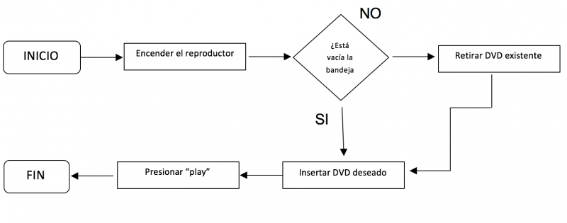

Representan visualmente el flujo de datos a través de sistemas de tratamiento de información. Los diagramas de flujo describen qué operaciones y en qué secuencia se requieren para solucionar un problema dado. Estos desempeñan un papel vital en la programación de un problema y facilitan la comprensión de problemas complicados y sobre todo muy largos. Una vez que se dibuja el diagrama de flujo, llega a ser fácil escribir el programa en cualquier lenguaje de programación. Los diagramas en flujo son utilizados en la economía y también en diferentes procesos industriales, ya que explican de forma bastante sencilla los procesos, operaciones, gestiones, etc. De forma aún más fácil de comprender que la explicación por medio de textos o a través de instrucciones verbales, además la realización de diagramas facilita la consulta y promueve la creatividad cuando son aplicados a la solución de problemas.
Se habla de procesos para referirse a una secuencia específica de actividades, es decir, a los pasos a dar dentro del diagrama de flujo. En informática, los procesos son secuencias iniciadas o bien por disparadores programados dentro del sistema, o por intervenciones del usuario del sistema. Cada uno posee una dirección, un propósito y una serie de pasos que abarca.
Los Diagramas de flujo se dibujan generalmente usando algunos símbolos estándares; sin embargo, algunos símbolos especiales pueden también ser desarrollados cuando sean requeridos. Algunos símbolos estándares, que se requieren con frecuencia para diagramar programas se muestran a continuación.
| Símbolo | Nombre | Función |
|---|---|---|
| Inicio / Final | Indica el comienzo o el final de un flujo en el diagrama de procesos. | |
| Línea de flujo | Es un símbolo de conexión utilizado para indicar una interconexión entre otros dos símbolos, y la dirección del flujo. | |
| Entrada / Salida | Es un tipo de dato o información que las personas pueden leer, como un informe impreso, por ejemplo. | |
| Proceso | Indica un determinado proceso y sus funciones y actividades. | |
| Decisión | Esto demuestra que se debe tomar una decisión y que el flujo del proceso va a seguir cierta dirección según esta decisión. | |
| Iteración | Indica que una secuencia de comandos ocurrirá, repitiéndose continuamente hasta cumplir con cierta condición. | |
| Conector | Indica que habrá una inspección en este punto. | |
| Datos | Representa cualquier tipo de dato en el diagrama de flujo. |
Diagrama de flujo para reproducir un DVD
Aquí un video donde habla de los diagramas de flujo, como hacerlos: https://www.youtube.com/watch?v=8bd9G0Cg160